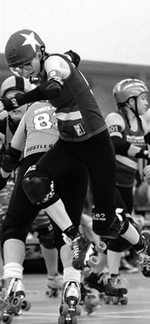
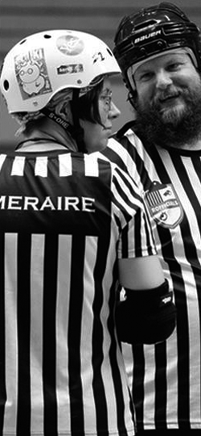
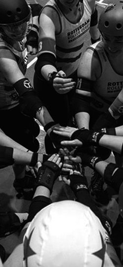

Get involved
Our new skater sessions take place every week on Saturday
from 10.00 to 12.00 and are open to everyone,
whether you’re an experienced skater or if you’ve never put skates on in your life.
When you start out you don’t need any equipment as it will be all provided for the first couple of
trainings.
Our doors are open, just drop us an email so we know what gear we need to reserve for you.
No experience necessary, but it is of course an advantage! We’ll teach
you all the skills you’ll need to skate and fall safely.
Don’t worry about fitness level either, roller derby is a great way to get in
shape and most of our skaters started without playing sports, ever before.

A-team: Rotterdam Death Row Honeys
The Rotterdam Death Row Honeys are fanatic athletes. They train hard for their place in the
international rankings. You can find our rankings at Flat track stats.
Rotterdam Killer Bees
For the Bees being able to play equalizes fun. In July 2014 they played
their first scrimmage against rival Amsterdam and are growing ever since.
Some stay, some move up to the A-team.

Rofficials
Want to keep skaters safe and make sure we are behaving? Want to know all
about the rules? Don’t like to get hit? Become a Rofficial! Officials are
often known as team “no fun”, but you can’t say that about our Rofficials!
Of course they train to keep a straight face when they are calling our penalties,
but they are also known to be quite fun during our joint scrimmage training
and travel all over Europe to officiate games at other leagues.

Juvies
If you’re totally new to skating and roller derby, we will first teach
you the basics. While you’re learning, you’re in a group with others who
are new. We call this group our ‘Juvies’ and try to teach you all we know
before you join a team.